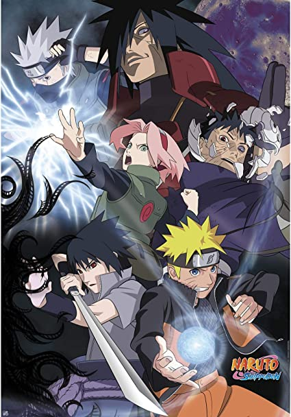

the term “Big Three”, which refers to the three most popular and influential anime series of the 2000s. These three shōnen manga received anime adaptations at almost the same time and all three of them, despite their completely different evolutions, marked a whole generation. Yours truly was part of that generation and this article is going to be a love letter to a whole concept that not only influenced the world of anime in general, but also a whole generation of people around the world
. They are Tite Kubo’s Bleach, Masashi Kishimoto’s Naruto, and Eiichiro Oda’s One Piece. These three anime series redefined the perception of anime around the world and made the whole genre globally popular, raising its viewership and revenues.
Ichigo Kurosaki is a teenager from Karakura Town who can see ghosts, a talent allowing him to meet a supernatural human Rukia Kuchiki, who enters the town in search of a Hollow, a kind of monstrous lost soul who can harm both ghosts and humans. Rukia is one of the Soul Reapers (死神, Shinigami, literally 'Death Gods'), soldiers trusted with ushering the souls of the dead from the World of the Living to the Soul Society (尸魂界 (ソウル・ソサエティ), lit. "Dead Spirit World"), the afterlife realm from which she originates and with fighting Hollows. When she is severely wounded defending Ichigo from a Hollow she pursues, Rukia transfers her powers to Ichigo, so he may fight in her stead while she recovers her strength. Rukia is thereby trapped in an ordinary human body, and must advise Ichigo as he balances the demands of his substitute Soul Reaper duties and attending high school. For aid in hunting the Hollows, the pair ally with a trio of other spiritually empowered allies: Ichigo's high school classmate Orihime Inoue, best friend Yasutora "Chad" Sado and Uryū Ishida, a Quincy with the ability to control spiritual particles.

Naruto Uzumaki, a young ninja who seeks recognition from his peers and dreams of becoming the Hokage, the leader of his village. A powerful fox known as the Nine-Tails attacks Konoha, the hidden leaf village in the Land of Fire, one of the Five Great Shinobi Countries in the Ninja World. In response, the leader of Konoha and the Fourth Hokage, Minato Namikaze seals the fox inside the body of his newborn son, Naruto Uzumaki, making Naruto a host of the beast; this costs Naruto's father his life, and the Third Hokage returns from retirement to become the leader of Konoha again. Naruto is often scorned by Konoha's villagers for being the host of the Nine-Tails. Due to a decree by the Third Hokage forbidding any mention of these events, Naruto learns nothing about the Nine-Tails until 12 years later, when Mizuki, a renegade ninja, reveals the truth to Naruto. Naruto then defeats Mizuki in combat, earning the respect of his teacher, Iruka Umino.
